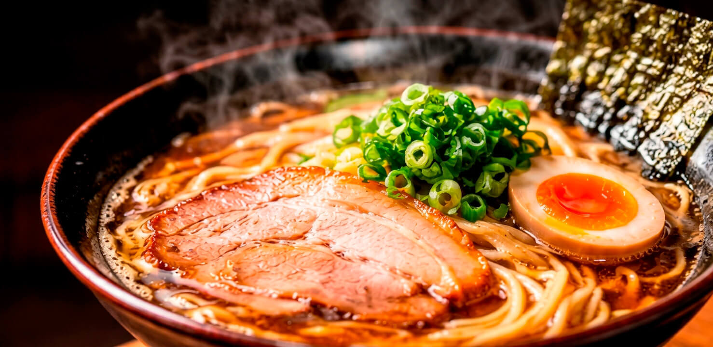

全国のうまいラーメン、
ここに集結。
一杯の感動を、あなたに。
全国各地の人気ラーメン店から、地元で愛される隠れた名店まで。本当に食べたい一杯が見つかる、ラーメン好きのためのランキングサイト。
RANKING
今、食べたい人気ラーメン
全国のラーメン店をチェックして、話題の一杯を見つけよう！
AREA
エリアから探す
47都道府県から、お気に入りのラーメンを見つけよう。
TYPE
ラーメンの種類から探す
定番の味から個性派まで、あなたの好みの一杯を見つけてください。
SPECIAL FEATURE
ラーメンの世界を、もっと深く。
全国には、まだ知られていない魅力的なラーメンがたくさんあります。店主のこだわりやご当地ラーメンの魅力、ラーメンをもっと楽しむための情報を特集記事でお届けします。
ラーメン特集を読むSEARCH
お店を探す
地域や味のよい好みから、行ってみたいラーメン店を探せます。
REVIEW
口コミ・レビュー
あなたの一杯をシェアして、ラーメンの魅力を広げましょう。